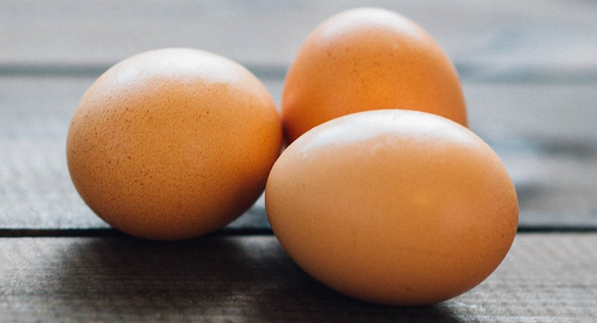
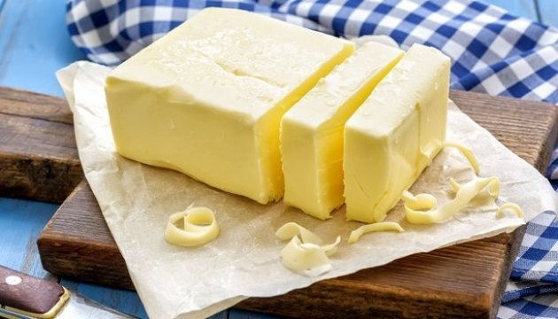
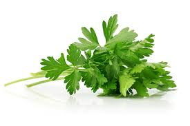

Информация о блюде
| Описание | На праздничный и повседневный стол. Вкусно и красиво! Мой вариант, может кому пригодится. |
| Каллории | 749 кКал |

6 шт


50 гр


Способ приготовления
- Все очень просто:Сварить яйца.
- Разрезать каждое яйцо вдоль.
- Высунуть желток, смешать с размягченным сливочным маслом, посолить, поперчить (по вкусу).
- Добавить мелко резаный лук, измельченный чеснок. Этой начинкой нафаршировать половинки яиц.
- Украсить петрушкой или по желанию.